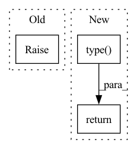

Pattern ID :1929

Before Change
shape: Tuple[int, ...],
) -> torch.Tensor:
Strategy for valid numpy array scalar python3 types.
raise NotImplementedError
def tensor_scalar_dtype_from_type(scalar_type: type) -> torch.dtype:
After Change
np_dtype = _TORCH_NP_DTYPE_MAP[torch_dtype]
arr = draw(hnp.arrays(dtype=np_dtype, shape=torch_shape))
t = torch.from_numpy(arr)
t = t.type(torch_dtype)
return t
def tensor_scalar_dtype_from_type(scalar_type: type) -> torch.dtype:
In pattern: SUPERPATTERN
Frequency: 4
Non-data size: 3
Instances
Fragment ID: 8590737
Project Name: langfield/asta
Commit Name: 0a94f3ef13986e454bfe2996a5ec95140e60e65a
Time: 2020-02-18
Author: 35980963+langfield@users.noreply.github.com
File Name: asta/tests/strategies.py
M Class Name: AnonimousClass
N Class Name: AnonimousClass
M Method Name: tensors(3)
N Method Name: tensors(3)
M Parent Class:
N Parent Class:
M File Name: asta/tests/strategies.py
N File Name: asta/tests/strategies.py
M Start Line: 53
M End Line: 53
N Start Line: 76
N End Line: 89
'>
Before Change
self.dtype = dtype
def __call__(self, x):
raise NotImplementedError
def cast(x, dtype):
After Change
self.dtype = dtype
def __call__(self, x):
return x.type(self.dtype)
def cast(x, dtype=None):
'>
Fragment ID: 8590735
Project Name: tensorlayer/tensorlayerx
Commit Name: 7fc66508a3f36efeafd526c68960039e377b2427
Time: 2022-03-02
Author: laicheng_vip@163.com
File Name: tensorlayerx/backend/ops/torch_backend.py
M Class Name: Cast
N Class Name: Cast
M Method Name: __call__(2)
N Method Name: __call__(2)
M Parent Class: object
N Parent Class: object
M File Name: tensorlayerx/backend/ops/torch_backend.py
N File Name: tensorlayerx/backend/ops/torch_backend.py
M Start Line: 803
M End Line: 803
N Start Line: 803
N End Line: 803
'>
Before Change
A Tensor or SparseTensor or IndexedSlices with same shape as x and same type as dtype.
raise NotImplementedError
class Transpose(object):
After Change
A Tensor or SparseTensor or IndexedSlices with same shape as x and same type as dtype.
return x.type(dtype)
class Transpose(object):
'>
Fragment ID: 8590734
Project Name: tensorlayer/tensorlayerx
Commit Name: 7fc66508a3f36efeafd526c68960039e377b2427
Time: 2022-03-02
Author: laicheng_vip@163.com
File Name: tensorlayerx/backend/ops/torch_backend.py
M Class Name: AnonimousClass
N Class Name: AnonimousClass
M Method Name: cast(2)
N Method Name: cast(2)
M Parent Class:
N Parent Class:
M File Name: tensorlayerx/backend/ops/torch_backend.py
N File Name: tensorlayerx/backend/ops/torch_backend.py
M Start Line: 823
M End Line: 823
N Start Line: 823
N End Line: 823